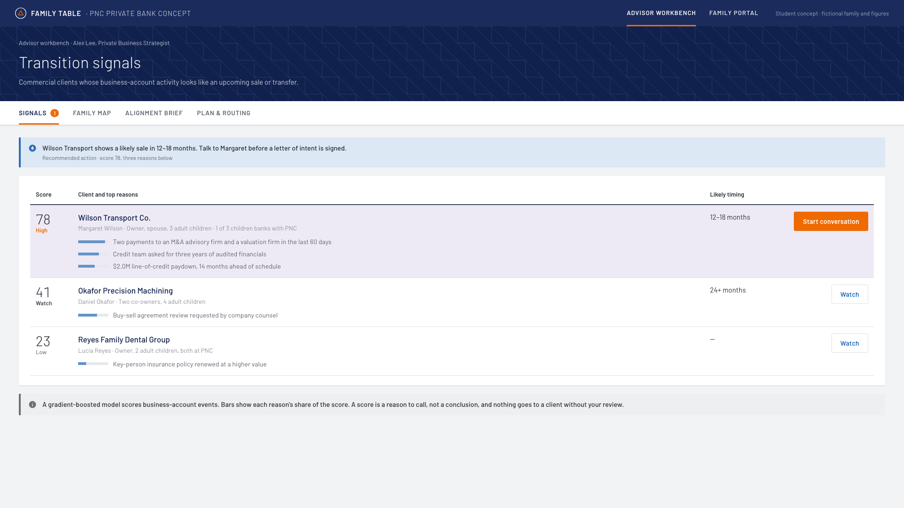
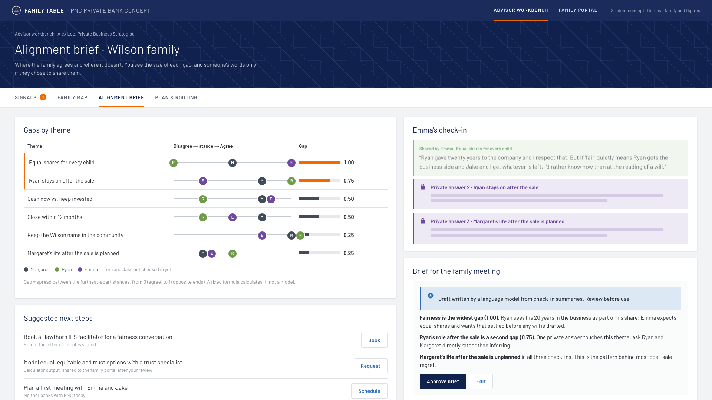
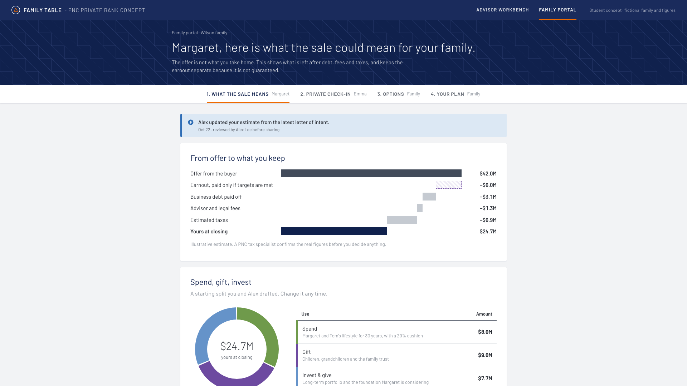
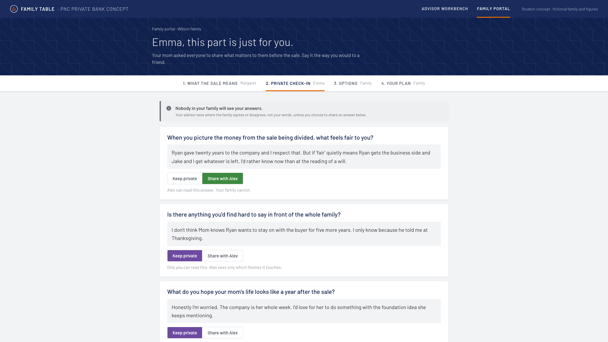

One core journey on each side, using the fictional Wilson family. Try it: share one of Emma's private answers in the family portal, then open the advisor's alignment brief and watch it unlock.




Five inputs, six components, one review gate. Every number comes from a model or a fixed formula PNC can audit. Language models never decide; they extract and explain. Nothing reaches a client until an advisor approves it.
The competition asks teams to be specific about AI. Here is each component: what it reads, what it produces, and who checks it.
| Component | Reads | Produces | Human check |
|---|---|---|---|
| Sale-likelihood model Machine learning | Events on the business's PNC accounts: payments to M&A, legal and valuation firms; audited-financials requests; early credit paydowns. | A 0–100 score, the likely timing, and the top reasons behind the score. | Advisor decides whether to contact the owner. The score is never shown to a client. |
| Deal-term extraction Language model | Letter of intent and earnout schedule the owner uploads. | Structured fields: price, cash at close, earnout amount and conditions, escrow, debt payoff. | Advisor verifies each extracted number against the document before the estimate is shared. |
| Stance extraction Language model | One member's private free-text answers. | A stance from −2 to +2 on six fixed themes: liquidity, legacy, fairness, role, purpose, timing. | Member sees and can correct their own stances. Raw text is not shown to anyone else. |
| Divergence score Fixed formula | Stances of everyone who checked in. | Gap per theme = (highest − lowest stance) ÷ 4, from 0 (agree) to 1 (opposite ends). | Transparent and reproducible; no model involved. |
| Proceeds and options calculator Fixed formula | Verified deal terms, debt, fees, tax rules, and the family's split. | Offer-to-net waterfall; equal, equitable and trust options with amounts per person. | Tax and trust specialists own the rules and confirm figures before decisions. |
| Brief and explanation writer Language model | Gap scores, shared answers only, and calculator output. | A draft advisor brief, and plain-language trade-offs for the family that cite the calculator's numbers. | Advisor edits and approves every draft. Approval is recorded in the audit log. |
Generative AI and alerts are easy to copy. The advantage comes from the data PNC already holds and the trust the product earns.
PNC banks the operating company, so it can see a sale coming 12–18 months ahead. Wealth managers outside the bank only see the money after it moves.
Each family member answers alone. The advisor sees gaps, not words, unless someone shares. Honest answers are data no competitor can collect or buy.
Business, owners, spouse, heirs, trusts and accounts in one consented map, so heirs become PNC relationships before the assets move.
Hypotheses to validateWhether business-account signals may be used for Private Bank outreach under PNC's data-sharing and consent policies; whether family members will answer honestly in writing; whether advisors will act on gap scores.